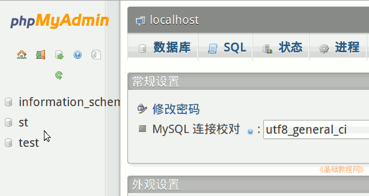

2011-2012 第一学期八年级电子表格教学课程设计
作者：TeliuTe 来源：基础教程网
二十、学会数据库 返回目录 下一课学习目标：掌握数据库基本名词，学会登录数据库；
注意事项：用户名是共用的，登录后不要修改密码；
1、学会数据库
1）数据库是将数据信息科学存放在一起；
2）广泛使用在网络应用中；
3）找到登录链接，输入用户名及密码；
4）认一下窗口中的各个图标；

课后记 2011-11-16 12:54：
讨厌的，信技课是替补队员？本节学习了数据库的基础知识，如果你成功地完成了练习，请继续学习下一课内容；
本教程由86团学校TeliuTe制作|著作权所有
基础教程网：http://teliute.org/
美丽的校园……
转载和引用本站内容，请保留版权信息和本站链接。